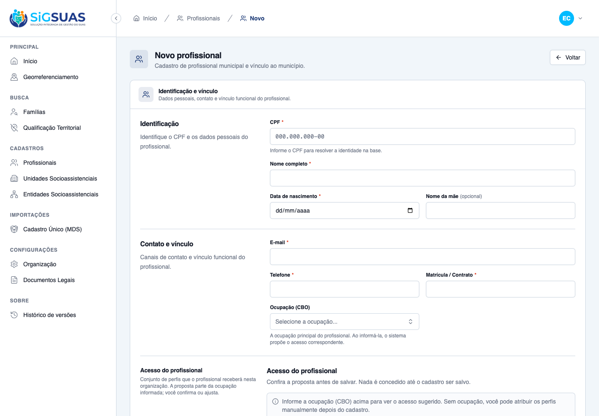
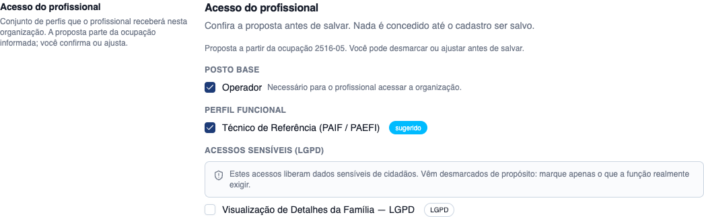
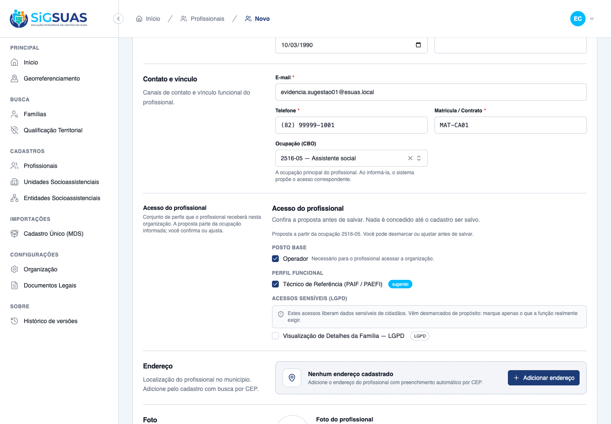
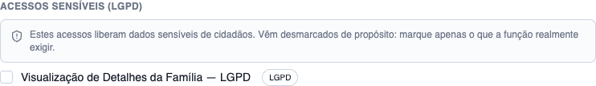
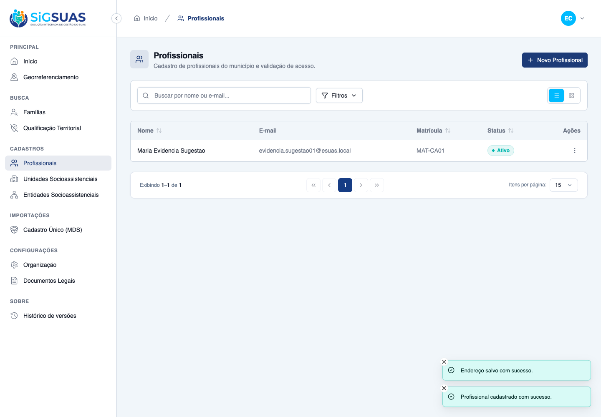
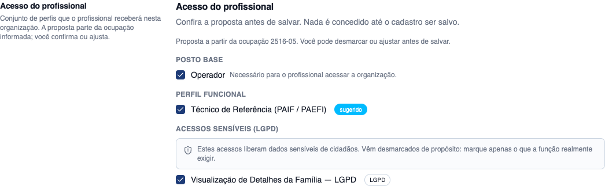
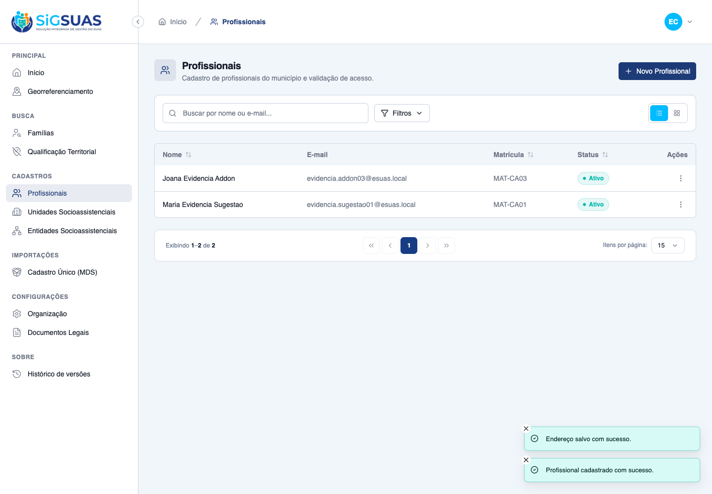
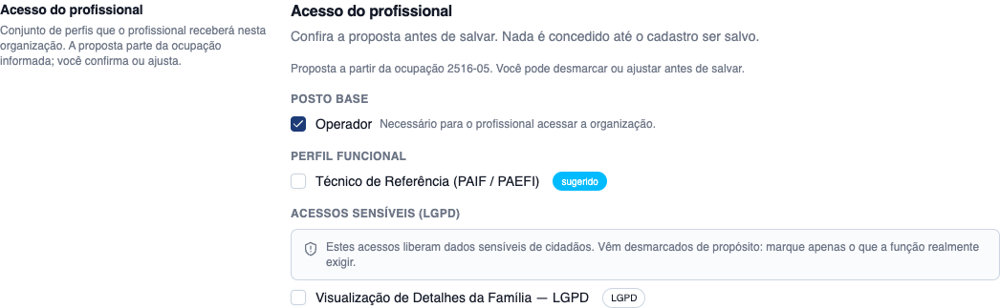
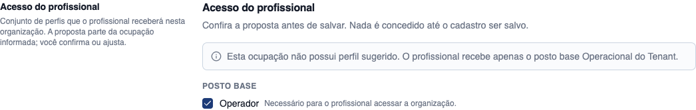

8 critérios de aceite, todos atendidos: 5 evidenciados dirigindo o frontend do tenant no navegador (CA01–CA05), 2 combinando navegador e suíte automatizada (CA06 e CA08, cujos caminhos são inalcançáveis pela tela por desenho) e 1 exclusivamente automatizado (CA07, isolamento entre tenants). A suíte Pest da feature roda 19 testes com 97 asserções, todos passando. Nenhum critério ficou em aberto e nenhum defeito foi observado durante a execução.
| CA | Critério | Status |
|---|---|---|
| CA01 | Sugestão aparece pré-marcada ao informar o CBO | ATENDIDO · navegador |
| CA02 | Add-on LGPD aparece sugerido e desmarcado; salvar sem marcá-lo não concede acesso | ATENDIDO · navegador |
| CA03 | Confirmação afirmativa do add-on registra a origem | ATENDIDO · navegador |
| CA04 | Master recusa a sugestão | ATENDIDO · navegador |
| CA05 | CBO sem entrada no mapa | ATENDIDO · navegador |
| CA06 | Salvar somente add-on é recusado | ATENDIDO · navegador + automatizado |
| CA07 | Isolamento entre tenants | ATENDIDO · automatizado |
| CA08 | Nenhum dado pessoal em texto livre | ATENDIDO · navegador + automatizado |
Critério (Gherkin): Dado que o Master está cadastrando um profissional no seu tenant e que o CBO 2516-05 (Assistente social) está mapeado ao perfil "Técnico de Referência", quando o Master informa esse CBO, então GET /api/client/professionals/role-suggestion retorna 200, o posto base "Operador" vem com preselected = true e group = "base", o perfil "Técnico de Referência" vem com preselected = true e group = "functional", cada papel traz source = "suggested" e o CBO que o originou, e a tela indica que a marcação veio da ocupação informada.
Como foi testado: Autenticado como Master (guard client, organização E2E CadÚnico), abrir /app/cadastros/profissionais-municipais/novo. Antes de informar a ocupação, a seção Acesso do profissional apenas orienta. Ao selecionar 2516-05 — Assistente social no combobox Ocupação (CBO), o formulário chama GET /api/client/professionals/role-suggestion?cbo_id=715 e monta a proposta.



Critério (Gherkin): Dado o mesmo cadastro do CA01, cuja sugestão inclui family_viewer, quando a proposta é exibida, então o add-on "Visualização de Detalhes da Família — LGPD" vem com group = "addon" e com preselected = FALSE. Quando o Master salva sem marcá-lo, então o profissional é criado sem family_viewer, nenhum user_tenant_role com esse papel existe no tenant ativo e o usuário NÃO tem a permissão families.view-details.
Como foi testado: Na mesma proposta do CA01, observar o grupo Acessos sensíveis (LGPD). Concluir o cadastro (CPF 655.599.586-62, endereço via CEP 57300-290) sem marcar o add-on e clicar Salvar profissional. Em seguida, conferir user_tenant_role e a trilha no banco.


Critério (Gherkin): Dado o mesmo cadastro, quando o Master marca family_viewer e salva, então o acesso é concedido no tenant ativo (user_tenant_role criado), uma entrada é gravada em activity_log com log_name = "tenant_professional" e event = "roles_granted_from_suggestion", causer = o Master, subject = o profissional, tenant_id = o tenant ativo, properties contendo cbo_code, suggested, suggested_kept (com family_viewer) e o momento, e properties NÃO contendo CPF nem nome completo em texto livre.
Como foi testado: Novo cadastro (CPF 283.417.962-01) com o mesmo CBO 2516-05, desta vez marcando o add-on Visualização de Detalhes da Família — LGPD antes de salvar. Depois, inspecionar user_tenant_role e a última entrada de activity_log.


Critério (Gherkin): Dado um cadastro com o perfil "Técnico de Referência" pré-marcado, quando o Master desmarca o perfil e salva, então o profissional é criado apenas com o posto base Operacional do Tenant, sem nenhuma permissão dos módulos daquele perfil, e properties da auditoria trazem suggested_removed = ["pf_tecnico_referencia"].
Como foi testado: Novo cadastro (CPF 915.375.932-00) com o CBO 2516-05. Na proposta, desmarcar o perfil funcional Técnico de Referência (PAIF / PAEFI) e salvar.

Critério (Gherkin): Dado o CBO 5153-20 (Conselheiro tutelar), sem entrada no mapa, quando o Master o informa no cadastro, então a resposta é 200 (não é erro), has_mapping = false, meta.fallback = "minimum_base_post", roles contém APENAS o posto base operador com preselected = true, nenhum add-on é sugerido e a tela informa que a ocupação não possui perfil sugerido. Quando o Master salva, o profissional é criado com o posto base e nenhum módulo operacional.
Como foi testado: Novo cadastro (CPF 236.407.697-83) selecionando 5153-20 — Conselheiro tutelar, ocupação que não tem entrada no mapa da HU #10343. Observar a proposta e concluir o cadastro.

Critério (Gherkin): Dado um cadastro em que o Master marcou family_viewer e removeu o posto base, quando ele tenta salvar, então o sistema recusa com 422, nenhum tenant_professional é criado, nenhum user_tenant_role é criado e a mensagem informa que papel add-on exige posto base.
Como foi testado: O caso é inalcançável pela tela: o posto base é pré-marcado e não desmarcável (defesa em profundidade). A recusa do servidor foi provocada diretamente com POST /api/client/professionals e role_ids: [family_viewer], autenticado como o mesmo Master. Também coberto pelo teste Pest "CA06: recusa 422 ao salvar conjunto composto SO por add-on".
Critério (Gherkin): Dado um Master do tenant A, quando ele acessa por uuid um profissional pertencente ao tenant B, então a API responde 404 (nunca 403 — o registro não existe no escopo dele), e o mesmo vale para GET/PUT .../roles e para a sugestão aplicada àquele profissional.
Como foi testado: Critério de backend sem UI dedicada — a tela do tenant A nunca lista o profissional do tenant B, de modo que a evidência útil é a resposta da API. Coberto pelo teste Pest "CA07: profissional de outro tenant responde 404", com o guard client, a trait BelongsToTenant e o middleware EnsureTenantScope ativos.
Evidência por cobertura automatizada — ver Anexo.
Critério (Gherkin): Dado um cadastro de profissional contendo CPF e telefone, quando o cadastro é salvo com sucesso OU recusado por erro de validação, então nenhum registro em activity_log contém o CPF em claro (apenas mascarado por cpf_oculta), nenhum registro contém o nome completo em texto livre e nenhuma mensagem de erro devolvida ao usuário ecoa CPF ou nome completo.
Como foi testado: Inspeção direta das entradas de activity_log geradas pelos cadastros dos CA02, CA03, CA04 e CA05, procurando o CPF e o nome completo dos profissionais criados; e da mensagem de erro devolvida na recusa do CA06. Reforçado pelo teste Pest "CA08: a trilha NUNCA registra o CPF em claro".
Evidência por cobertura automatizada — ver Anexo.
PASS Tests\Feature\Api\Client\ProfessionalRoleSuggestionTest ✓ it CA01: apresenta posto base e perfil funcional PRE-MARCADOS 0.39s ✓ it CA02: apresenta o add-on LGPD visivel porem DESMARCADO 0.03s ✓ it CA02: salvar sem marcar o add-on NAO concede acesso ao prontuari… 0.06s ✓ it CA03: marcar o add-on concede o acesso e registra a origem da su… 0.04s ✓ it CA04: recusar a sugestao cria so o posto base e audita a retirad… 0.04s ✓ it CA04: papel fora da sugestao e registrado como manually_added 0.04s ✓ it CA05: CBO sem entrada devolve 200 com o padrao minimo, nao erro 0.03s ✓ it CA05: salvar com CBO nao mapeado cria o profissional so com o po… 0.03s ✓ it CA06: recusa 422 ao salvar conjunto composto SO por add-on 0.03s ✓ it CA07: profissional de outro tenant responde 404 0.03s ✓ it CA08: a trilha NUNCA registra o CPF em claro 0.03s ✓ it RN10: o Operador do tenant NAO acessa a sugestao (403) 0.02s ✓ it RN13: recusa a sugestao de um CBO inativo 0.03s ✓ it RN09: a sugestao nunca inclui o posto Master 0.03s ✓ it RN12: cadastro sem ocupacao segue funcionando (contrato legado r… 0.03s ✓ it RN11: alterar a ocupacao grava o novo CBO sem reprocessar o aces… 0.04s PASS Tests\Feature\Permissions\ProfessionalRoleSuggestionMasterOnlyTest ✓ it keeps professionals.role-suggestion master-only 1.11s ✓ it never leaks cbo-access-profiles into the client guard 1.10s ✓ it keeps permission coverage green (no authenticated route without… 0.02s Tests: 19 passed (97 assertions) Duration: 3.19s